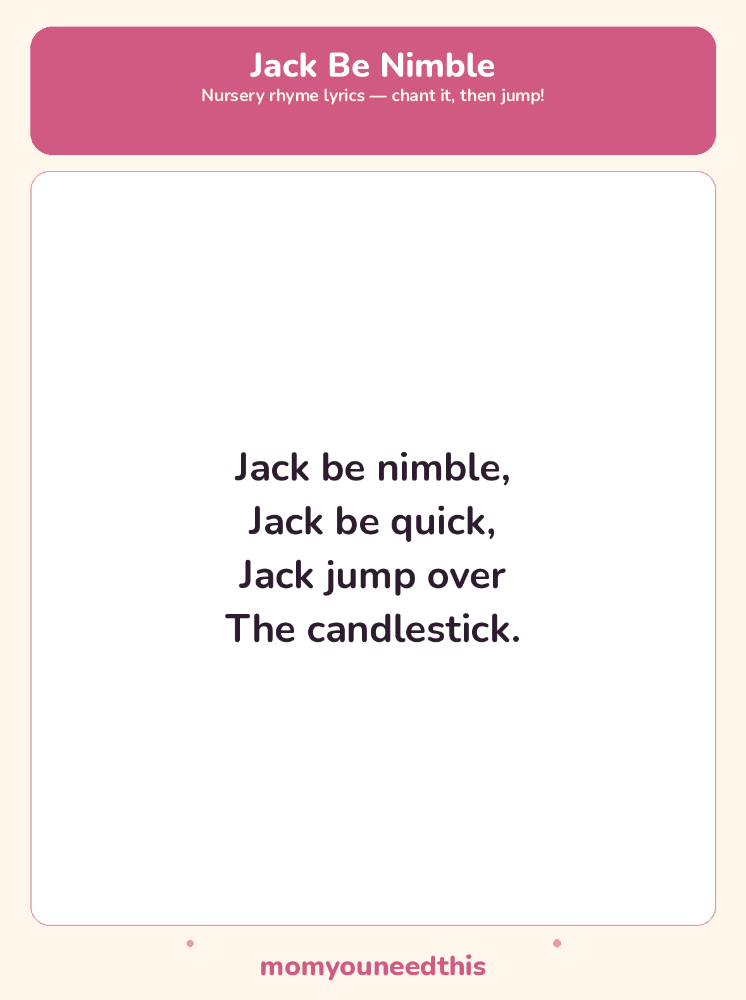

Jack Be Nimble The Jumping Rhyme, With Lyrics and a Free Printable
Short enough to learn in a single sitting, which is exactly its charm: one verse, one jump, done. Pair it with a pretend candle on the floor — a rolled-up sock does the job — and the rhyme becomes a jumping game.
Last updated: October 25, 2026
Quick Answer
Jack Be Nimble is a traditional nursery rhyme with just one short verse: Jack is nimble, Jack is quick, and Jack jumps over the candlestick. This page gives the full lyrics, a safe way for toddlers to practise the jump over a pretend candle, and a free printable lyrics sheet.
At a Glance
- Rhyme: Jack Be Nimble
- Type: Movement / jumping rhyme
- Verses: 1 — the single classic verse
- Best for: Ages 2–4
- Printable: 1 lyrics sheet
- Cost: Free — print at home
🎵 Jack Be Nimble Lyrics
Jack be nimble,
Jack be quick,
Jack jump over
The candlestick.

✂️ Download Your Free Jack Be Nimble Lyrics Sheet
All the lyrics from this page on one sheet, in big, well-spaced type for young readers.
⬇️ Download Free Lyrics Sheet 🖨️ Print🎁 Free printable for ages 2–4
🕯️ Jump Over the Pretend Candle
Tradition says children once played a jumping game with this rhyme — jumping over a candle, with a clean jump said to bring good luck. That is the old fortune-telling game attached to the verse, and it belongs in the past: never jump over a real candle or any flame.
The toddler version keeps the fun and drops the fire. Put a pretend candle on the floor — a line of tape, a scarf laid straight, or a toy candle — chant the verse together, and jump over it with two feet on “candlestick.” Land soft with bent knees, turn around, and go again. Chant it faster, then slower; the giggling is the exercise.
🖨️ How to Use This Rhyme
- Chant the verse first. Say it together a few times sitting down, clapping on “nimble” and “quick,” until the words are familiar.
- Make a pretend candle. A line of tape or a scarf on the floor is the candlestick — never a real candle, and nothing with a flame.
- Print the lyrics sheet. One page, one verse, in very big type — a first “song” a young child can hold and follow.
- Let your child “read” it back. Pointing at the lines while chanting from memory is early reading confidence at its simplest.
🎵 More Rhymes & Fun
🎵 Sing More Rhymes
Every rhyme in this set lives on one hub page, with lyrics and a printable for each. Browse the collection.
🎵 Five Little Monkeys
The counting-down rhyme, sung on five wiggling fingers. Read the lyrics.
🎵 Here We Go Round the Mulberry Bush
The circle singing game with morning-routine actions to mime. Read the lyrics.
📚 Learning Activities
The full hub of free printable activities for toddlers and preschoolers. Browse activities.
❓ Jack Be Nimble FAQ
What are the lyrics to Jack Be Nimble?
The full words are in the lyrics section near the top of this page. At a single short verse, this is one of the briefest rhymes going — the printable sheet carries the same verse in extra-large type.
What age is Jack Be Nimble for?
The chant suits babies and toddlers from the lap up, and the jumping game suits ages 2 to 4, once a child can jump with two feet. Older siblings love leading the chant and timing the jump.
Can I print the lyrics sheet?
Yes — the lyrics sheet is free to print at home with no signup. It carries the same single verse as this page, in extra-large type for young readers.
Did children really jump over a candle?
That is the tradition attached to the rhyme — children once played a jumping game over a candle, and a clean jump was said to bring good luck. Treat it as an old story about the rhyme, and only ever play the pretend version, over a line or a scarf.